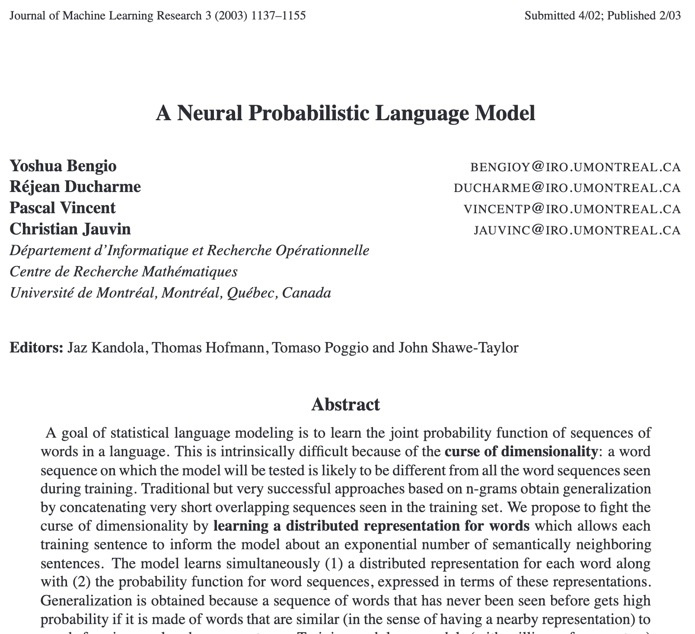
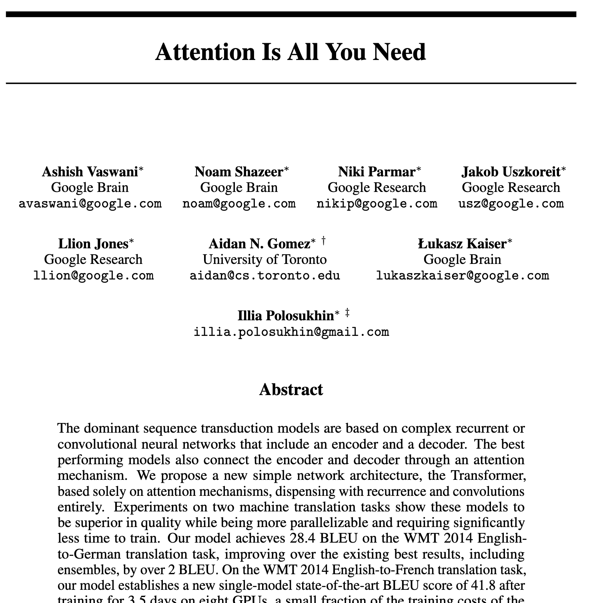

Code
'king' -> token ids [3364]
'queen' -> token ids [4188, 268]
'man' -> token ids [805]
'woman' -> token ids [8580]
'dog' -> token ids [9703]
'cat' -> token ids [9246]Part 1: Transformers 101
A language model takes a text and predicts the next word.
This notion was introduced and discussed already in the 1960s!
Intrinsically, language modeling is a stochastic task: the model outputs a probabilistic distribution.
First step: we need to decompose texts into basic units:
The set of tokens is called the vocabulary. Each token is mapped to an integer ID.
'king' -> token ids [3364]
'queen' -> token ids [4188, 268]
'man' -> token ids [805]
'woman' -> token ids [8580]
'dog' -> token ids [9703]
'cat' -> token ids [9246]Note
Some words correspond to a single token. Each model has a different tokenizer, here we use GPT-2’s tokenizer based on the BPE algorithm.
Text: 'Transformers are all you need!'
Token IDs: [41762, 364, 389, 477, 345, 761, 0]
Tokens: ['Transform', 'ers', ' are', ' all', ' you', ' need', '!']
Vocabulary size: 50257Bottom line: at this point, we have converted text into a sequence of integers.

Question: Which of the following best describes the relationship between words and tokens in English text?
1 word = exactly 1 token — every word maps to one token.
1 word ≈ 4 tokens — tokens are subword units smaller than words.
1 word ≈ 1/4 token — tokens group multiple words together.
There is no predictable relationship between words and tokens.
In Machine Learning, we distinguish between discrete (sparse) and continuous (dense) representations.
The key idea: represent each token as a vector in a vector space, called the latent space.
Concretely, an embedding matrix maps each token into a dense vector.
Embedding matrix: (50257, 768)
Example embedding for 'king': [ 0.10929982 -0.39468914 0.05942898 -0.10157487 -0.2785749 ] ...We are using PCA for dimensionality reduction.
Concepts and relationships are encoded as directions in the latent space
What do these operations have in common?
Man) - emb(Woman)King) - emb(Queen)Actor) - emb(Actress)They all represent the same concept: the gender direction.
The cosine similarity between two vectors x and y is defined as: \text{sim}(x, y) = \frac{x \cdot y}{\|x\| \|y\|}
It measures how similar two vectors are in terms of direction, regardless of their magnitude.
This is how we measure similarity in the latent space.
from sklearn.metrics.pairwise import cosine_similarity
def word_embedding(word):
ids = enc.encode(word)
return E[ids].mean(axis=0, keepdims=True)
pairs = [
("man", "woman"),
("dog", "philosophy"),
("banana", "car"),
]
print(f"{'Word 1':<10} {'Word 2':<10} {'Cosine similarity':>18}")
print("-" * 42)
for w1, w2 in pairs:
sim = cosine_similarity(word_embedding(w1), word_embedding(w2))[0, 0]
print(f"{w1:<10} {w2:<10} {sim:>18.4f}")Word 1 Word 2 Cosine similarity
------------------------------------------
man woman 0.5863
dog philosophy 0.3146
banana car 0.2884| Model | Embedding dim |
|---|---|
| GPT-2 small | 768 |
| GPT-3 | 12,288 |
| Llama 3 (largest) | 16,384 |
We have discussed the first two steps:
The actual input of the model is a sequence of dense vectors, representing the sequence of tokens.
The next step is to understand how the model processes these vectors to generate the next token.
Question: Which sequence correctly describes the pipeline from raw text to Transformer input?
Text → Dense vectors → Tokens → Integers
Text → Integers → Tokens → Dense vectors
Text → Tokens → Integers → Dense vectors
Text → Tokens → Dense vectors → Integers
An MLP is a simple feedforward neural network, consisting of a sequence of layers.
Each layer consists of a set of neurons, where:
The classical activation function is ReLU (Rectified Linear Unit), defined as: \text{ReLU}(x) = \max(0, x)
We say that a neuron is activated if its output is positive, and inactive if its output is zero.
The output of the MLP is a vector of logits, which are unnormalized scores for each token in the vocabulary.
We apply a softmax function to the logits to get a probability distribution over the vocabulary, which we can sample from to generate the next token:
\text{softmax}(\alpha)_{i,j} = \frac{\exp(\alpha_{i,j})}{\sum_{j'} \exp(\alpha_{i,j'})}
class MLPLanguageModel(nn.Module):
def __init__(self, vocab_size, embed_dim, hidden_dim):
super().__init__()
self.embed = nn.Embedding(vocab_size, embed_dim)
self.fc1 = nn.Linear(embed_dim, hidden_dim)
self.fc2 = nn.Linear(hidden_dim, vocab_size)
def forward(self, token_ids):
# token_ids : (batch, seq_len)
x = self.embed(token_ids) # (batch, seq_len, embed_dim)
x = self.fc1(x) # (batch, seq_len, hidden_dim)
x = F.relu(x) # (batch, seq_len, hidden_dim)
x = self.fc2(x) # (batch, seq_len, vocab_size)
return xWhat is the difference between nn.Embedding vs nn.Linear?
nn.Embedding is a lookup table: given an index i, return the corresponding row.nn.Linear is a matrix multiplication.nn.Embedding(V, D) is equivalent to nn.Linear(V, D) applied to a one-hot vector, but much more efficient.
import torch.nn as nn
import torch.nn.functional as F
small_embed = nn.Embedding(5, 3)
linear = nn.Linear(5, 3, bias=False)
linear.weight = nn.Parameter(small_embed.weight.T) # Transpose to match
idx = torch.tensor([2])
one_hot = F.one_hot(idx, num_classes=5).float()
print(f"Embedding lookup: {small_embed(idx)}")
print(f"Linear on one-hot: {linear(one_hot)}")Embedding lookup: tensor([[-1.1676, 0.0433, 0.5170]], grad_fn=<EmbeddingBackward0>)
Linear on one-hot: tensor([[-1.1676, 0.0433, 0.5170]], grad_fn=<MmBackward0>)MLPs process each token independently, without any communication between them. This makes it hard to capture long-range dependencies in text.

Noam Brown (OpenAI scientist) in 2022:
All of the incredible progress made in AI in the past 5 years can be summarized in one word: scale
Scale in two dimensions: in model size (number of parameters) and in data size (number of tokens).
Essentially, the Transformer is a sequence of communication and computation steps.
Input: a sequence (x_1, x_2, \ldots, x_n) of dense vectors, one for each token
Output: a new sequence (z_1, z_2, \ldots, z_n) of dense vectors, where each token has been updated based on the information from other tokens.
Each token produces three vectors:
Consider the sentence: “The cat sat on the mat because it was tired.”
When processing the token “it”, the model needs to resolve the pronoun:
Intuitively, the model computes the dot product q_{\text{it}} \cdot k_{\text{cat}} and q_{\text{it}} \cdot k_{\text{mat}} to determine which noun is more relevant to “it”.
If q_{\text{it}} \cdot k_{\text{cat}} is much larger than q_{\text{it}} \cdot k_{\text{mat}}, then the model will attend more to the information in v_{\text{cat}} when updating the representation of “it”.
The question is: how much should token i attend to token j?
We compute an attention score \alpha_{i,j} based on the similarity between q_i and k_j.
\alpha_{i,j} = \frac{q_i \cdot k_j}{\sqrt{d_k}}
The attention scores are normalized using the softmax function.
We compute context vectors from attention scores and value vectors: z_i = \sum_j \text{softmax}(\alpha)_{i,j} \cdot v_j
Intuitively, z_i is a weighted average of the value vectors, where the weights are given by the attention scores.
If q and k are random vectors with variance 1, then their dot product has variance d_k. This can lead to very large values for \alpha_{i,j}, where softmax behaves like a step function:
import math
# Demonstrate softmax sensitivity to scale
d_k = 64
q = torch.randn(1, d_k)
k = torch.randn(5, d_k)
raw_scores = q @ k.T
scaled_scores = raw_scores / math.sqrt(d_k)
print(f"Raw scores std: {raw_scores.std():.2f}")
print(f"Scaled scores std: {scaled_scores.std():.2f}")
print(f"Softmax(raw): {F.softmax(raw_scores, dim=-1).numpy().round(3)}")
print(f"Softmax(scaled): {F.softmax(scaled_scores, dim=-1).numpy().round(3)}")Raw scores std: 5.53
Scaled scores std: 0.69
Softmax(raw): [[0.992 0.008 0.001 0. 0. ]]
Softmax(scaled): [[0.418 0.227 0.17 0.066 0.119]]Dividing by \sqrt{d_k} keeps the variance of the scores around 1, which helps with training stability.
The query, key, and value vectors are computed from the input token embeddings using learned linear transformations: q_i = W_q x_i, \quad k_i = W_k x_i, \quad v_i = W_v x_i
In other words, we have three matrices W_q, W_k, and W_v that project the input vector x_i into the query, key, and value spaces.
class SelfAttentionHead(nn.Module):
def __init__(self, input_dim, head_dim):
super().__init__()
self.W_q = nn.Linear(input_dim, head_dim, bias=False)
self.W_k = nn.Linear(input_dim, head_dim, bias=False)
self.W_v = nn.Linear(input_dim, head_dim, bias=False)
self.scale = head_dim ** 0.5
def forward(self, x, mask=None):
# x: (batch, seq_len, input_dim)
Q = self.W_q(x) # (batch, seq_len, head_dim)
K = self.W_k(x) # (batch, seq_len, head_dim)
V = self.W_v(x) # (batch, seq_len, head_dim)
# Attention scores: (batch, seq_len, seq_len)
scores = (Q @ K.transpose(-2, -1)) / self.scale
weights = F.softmax(scores, dim=-1)
context = weights @ V # (batch, seq_len, head_dim)
return context, weightsThe attention mechanism only requires matrix multiplications (and a softmax computation), which are highly optimized on modern hardware.
It is entirely data-driven: the model learns to compute the query, key, and value vectors in a way that captures the relevant information for the task at hand, without any hand-crafted rules.
In a decoder, token i can only attend to tokens j \le i. We implement this by masking future positions.
Attention weights with causal mask:
[[1. 0. 0. 0. 0. ]
[0.549 0.451 0. 0. 0. ]
[0.371 0.274 0.355 0. 0. ]
[0.259 0.162 0.408 0.172 0. ]
[0.227 0.206 0.191 0.217 0.159]]Question: For a sequence of n tokens, what is the memory complexity of the attention matrix?
O(n) — linear in sequence length
O(n \log n) — pseudo-linear
O(n^2) — quadratic
O(d \cdot n) — linear in embedding dimension
For a sequence of n tokens with embedding dimension d:
Computing all pairwise scores \alpha_{i,j} = q_i \cdot k_j / \sqrt{d} requires comparing every token with every other token: that is n^2 dot products.
Consequence: the attention matrix is n \times n, so both compute and memory scale as O(n^2).
Note
For n = 128\,000 tokens, the attention matrix has ~16 billion entries. This is why long-context efficiency is an active research area.
Instead of a single attention head, we run multiple heads in parallel.
Each head can learn to attend to different types of information. Their outputs are concatenated and projected.
class MultiHeadAttention(nn.Module):
def __init__(self, embed_dim, num_heads):
super().__init__()
head_dim = embed_dim // num_heads
# One independent SelfAttentionHead per head
self.heads = nn.ModuleList([
SelfAttentionHead(embed_dim, head_dim) for _ in range(num_heads)
])
self.W_out = nn.Linear(embed_dim, embed_dim, bias=False)
def forward(self, x, mask=None):
# Run all heads in parallel, concatenate their outputs
head_outputs = [head(x, mask)[0] for head in self.heads]
concat = torch.cat(head_outputs, dim=-1) # (batch, seq_len, embed_dim)
return self.W_out(concat)A block combines MLP (computation) and multi-head attention (communication). To define a block we further need:
class TransformerBlock(nn.Module):
def __init__(self, embed_dim, num_heads):
super().__init__()
self.ln1 = nn.LayerNorm(embed_dim)
self.attn = MultiHeadAttention(embed_dim, num_heads)
self.ln2 = nn.LayerNorm(embed_dim)
self.mlp = nn.Sequential(
nn.Linear(embed_dim, 4 * embed_dim), nn.GELU(),
nn.Linear(4 * embed_dim, embed_dim),
)
def forward(self, x, mask=None):
x = x + self.attn(self.ln1(x), mask=mask) # communication
x = x + self.mlp(self.ln2(x)) # computation
return xFor each token vector x \in \mathbb{R}^d, layer normalization re-centers and re-scales across its d features: \text{LN}(x) = \gamma \odot \frac{x - \mu}{\sqrt{\sigma^2 + \epsilon}} + \beta
where \mu and \sigma^2 are the mean and variance of the entries of x, and \gamma, \beta are learned parameters.
We wrap every layer with nn.LayerNorm. Why? As vectors flow through dozens of blocks, their scale drifts: entries blow up or collapse, and training becomes unstable.
Each token is normalized independently: nothing mixes across positions or batch, so it behaves identically at any sequence length.
Note
Why not BatchNorm? BatchNorm normalizes across the batch, coupling examples and breaking on variable-length sequences. LayerNorm works within a single token, the natural fit for Transformers. Placing it before each sub-layer (pre-norm) is the modern default and lets us train very deep stacks.
Whatever the input scale, the output has zero mean and unit variance per token:
The other key ingredient is the x = x + in front of each sub-layer: x \leftarrow x + \text{Attention}(x), \qquad x \leftarrow x + \text{MLP}(x)
Instead of replacing its input, each sub-layer only computes a correction that gets added back.
A useful mental model: the residual connections form a residual stream running the full depth of the model.
class DecoderTransformer(nn.Module):
def __init__(self, vocab_size, embed_dim, num_heads, num_layers, context_length):
super().__init__()
self.token_emb = nn.Embedding(vocab_size, embed_dim)
self.pos_emb = nn.Embedding(context_length, embed_dim)
self.blocks = nn.ModuleList(
[TransformerBlock(embed_dim, num_heads) for _ in range(num_layers)]
)
self.ln_final = nn.LayerNorm(embed_dim)
self.head = nn.Linear(embed_dim, vocab_size, bias=False)
self.context_length = context_length
def forward(self, input_ids):
T = input_ids.shape[1]
mask = torch.tril(torch.ones(T, T)) # causal mask
x = self.token_emb(input_ids) + self.pos_emb(torch.arange(T))
for block in self.blocks:
x = block(x, mask=mask)
return self.head(self.ln_final(x)) # (batch, T, vocab_size)The model needs to know the position of each token in the sequence, since attention is permutation-invariant. We add a learned positional embedding to each token embedding.
Positional embeddings shape: torch.Size([10, 16])
Example positional embedding for position 0: tensor([ 0.1263, -1.3858, 0.2162, -0.8025, -0.0672, 1.5073, -0.0295, -2.2785,
0.7625, -0.4174, -0.7087, 0.6655, -0.1497, 0.7562, -1.5429, -0.4642],
grad_fn=<EmbeddingBackward0>)The original Transformer used fixed sinusoidal positional embeddings, but modern models typically use RoPE (Rotary Positional Embeddings), which are more efficient and generalize better to longer contexts.
Unlike learned positional embeddings, RoPE encodes position information directly into the attention mechanism, allowing it to extrapolate to sequence lengths longer than those seen during training.
At every position t the output predicts token t+1. A single sequence of c tokens therefore yields c predictions.
Let’s look at the top predictions of GPT-2 at each position:
from transformers import GPT2LMHeadModel
gpt2_lm = GPT2LMHeadModel.from_pretrained("gpt2").eval()
tokens = enc.encode("The cat sat on")
with torch.no_grad():
logits = gpt2_lm(torch.tensor([tokens])).logits # (1, seq_len, vocab)
for i, t in enumerate(tokens):
top = torch.topk(logits[0, i], 3).indices
print(f"{enc.decode([t])!r:8} -> {[enc.decode([j.item()]) for j in top]}")'The' -> ['\n', ' the', ' "']
' cat' -> [' was', ' is', "'s"]
' sat' -> [' on', ' in', ' down']
' on' -> [' the', ' a', ' her']To generate text we repeat four steps:
@torch.no_grad()
def generate(model, input_ids, max_new_tokens=20):
context_length = model.config.n_positions
for _ in range(max_new_tokens):
logits = model(input_ids[:, -context_length:]).logits
probs = F.softmax(logits[:, -1, :], dim=-1)
next_token = torch.multinomial(probs, num_samples=1)
input_ids = torch.cat([input_ids, next_token], dim=1)
return input_ids
prompt = torch.tensor([enc.encode("The meaning of life is")])
print(enc.decode(generate(gpt2_lm, prompt)[0].tolist()))The meaning of life is.
This is not necessarily a libertarian. This is not always true. Its recurrence inThree knobs reshape the distribution before sampling:
@torch.no_grad()
def sample(model, input_ids, max_new_tokens=50, temperature=1.0, top_k=None, top_p=None):
for _ in range(max_new_tokens):
logits = model(input_ids[:, -model.config.n_positions:]).logits[:, -1, :] / temperature
if top_k is not None: # keep the k highest logits
kth = torch.topk(logits, top_k).values[:, -1:]
logits = logits.masked_fill(logits < kth, float("-inf"))
if top_p is not None: # keep the smallest nucleus with mass > p
s_logits, s_idx = torch.sort(logits, descending=True)
probs = F.softmax(s_logits, dim=-1)
remove = probs.cumsum(dim=-1) - probs > top_p # prefix mass already exceeds p
logits = logits.masked_fill(remove.scatter(-1, s_idx, remove), float("-inf"))
probs = F.softmax(logits, dim=-1)
input_ids = torch.cat([input_ids, torch.multinomial(probs, 1)], dim=1)
return input_ids
prompt = torch.tensor([enc.encode("The meaning of life is")])
out = sample(gpt2_lm, prompt, temperature=0.8, top_k=50, top_p=0.9)
print(enc.decode(out[0].tolist()))The meaning of life is not defined by the way it is imagined, it is defined by the way in which we live it. So when we think about life and its meaning, it is an idea that is rooted in what we call the "mystery of life." TheHugging Face hosts thousands of pre-trained models behind a uniform API, usable three ways:
a 3B-parameter model:
Note
These are just the weights. Add ~1.2× for inference (plus a KV cache that grows with context length), or ~4× for full fine-tuning, where Adam also stores gradients and two optimizer states per parameter.
The quickest path: one call, little control.
The meaning of life is not that simple. The human condition is complicated, but it is the one that must be explained. The science of the human body is not just aLoading the model and tokenizer directly exposes the logits we built by hand.
from transformers import AutoModelForCausalLM, AutoTokenizer
tokenizer = AutoTokenizer.from_pretrained("gpt2")
gpt2 = AutoModelForCausalLM.from_pretrained("gpt2").eval()
inputs = tokenizer("Attention is all you", return_tensors="pt")
with torch.no_grad():
next_logits = gpt2(**inputs).logits[0, -1, :]
for idx in torch.topk(next_logits, 5).indices:
print(f"{tokenizer.decode([idx])!r:8} {next_logits[idx]:.2f}")' need' -111.75
' have' -112.75
' can' -113.66
' get' -114.18
' want' -114.80generate() wraps the sampling loop, with the same temperature / top-k knobs.